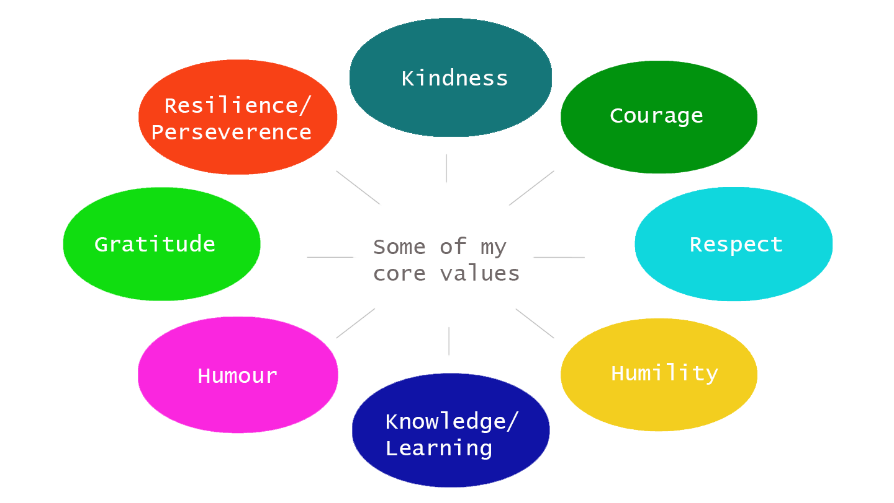

Some Core Personal Values
An Ethical Decision
Currently one of my cats is in a state of decline becoming more and more frail. An ongoing ethical decision I have is at what point I intervene and get her put to sleep (euthanised). My wish is that she will die in her own time peacefully in the sun however it may reach a point where she is uncomfortable in which case I will not stand by and allow her to suffer. My values guide me and make it easier (though not easy) to make this decision. In part my kindness, the respect I have for my cat as a sentient being, and my responsibility for her drive me to enact the best care for her. My humility and pursuit towards knowlege and information guides me to seek out advice from vets to guide me in my discision as they know cat behaviour and development stages better than I do. When the time comes to make the decision my courage will help me make a call that will hurt me but is the best decision. My resilience will help me when I do lose her, and my gratidue helps my resilience as I reflect on our wonderful time together.
A definition for culture given by Oxford Languages is: "The ideas, customs, and social behaviour of a particular people or society". Cultures can be seen to exist in macro form (countries, ethnicities, etc) and micro form (Work places, schools, family groups, etc). The culture of NZ has undoubtably shaped me, I live within it and its laws govern me. However, I feel that my values as listed above have been shaped more strongly by the micro culture that is my network of family and friends. The individuals that make this group come from many backgrounds and have different ways of doing and thinking about some things.
Strengths and/or Weaknesses
I am on the fence as to the relability and validity of personality tests as a general rule. However, as dirrected in the write up for this task I took a personality test for this section. The result that I got was INFJ-A "The advocate", some of the elements that this personality decribes I think are fairly applicable, well some I struggle to see. The strengths and weaknesses attributed to this type are as follows
| Strengths | Weaknesses |
| Creative | Reserved | Insightful | Take criticism to heart |
| Strong principles | Perfectionism |
| Passionate about things | Take on stress |
| Altruistic | Seek the extraordinary |
Perfectionism and an inability to take constructive criticism and manage stress would be great barriers to learning. On the other hand, passion for the topic, self insight (when to get help, how you are tracking, etc) and creativity would be good foils to these barriers.
Experiencing an Impasse
People sometimes have very fixed views about pain and why they experience it. The pain system very interesting and quite complex. Sometimes people who have had an injury heal and yet their pain remains with them. Often in these cases of chronic pain the driver for the persons pain signal has become centralised rather than the overwhelming stimulus coming from the periphery. This does not mean that the pain is imagined, that they knowingly perpetuate their pain, or that their experience isn’t real. It does however alter the way you treat the pain. Part of my pervious role as a physiotherapist was to provide pain education to help people understand their condition, this information was often meet with resistance as people struggled to come to terms with the fact that there was no longer a physical stimulus for their pain that could be treated. When I first entered this role I was very ‘cookie cutter’ with how I delivered this information and I found that when I wasn’t listening to people first and finding out where they were sitting with their pain journey and pain beliefs I couldn’t facilitate their frameshift towards understanding their pain. As I evolved as a physiotherapist I got better at tailoring pain education to the individual based on the information they had first shared with me – this does not mean that I was always successful but it did lead to more meaningful discussions, trust, and sometimes a step towards recovery.